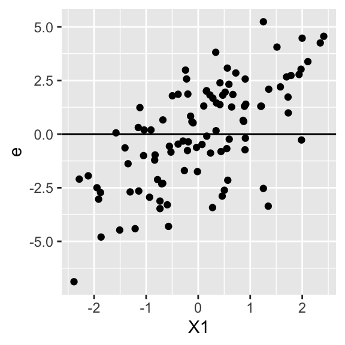

N = 100
dat = data.frame( X1 = rnorm( N ) )
dat = mutate( dat,
X2 = X1 + rnorm( N ),
Y = 3 + 0.5 * X1 + 1.5 * X2 + rnorm( N ) )24 MLM Assumptions
There are generally two kinds of assumptions we should worry about the most: omitted variable bias, and independence assumptions. The latter of these is one we should always think about, especially with clustered data.
To learn about the assumptions, read Chapter 9 of R&B, paying attention to their examples and not so much to the mathematical formalism. This chapter has some dense prose, but then moves to specific diagnostics that make what they are talking about much more clear (and it also provides things you can do to check assumptions in your own work). As another source, the MLM in Plain Language textbook has some simpler explanations. Also see below for some further notes.
24.1 Omitted variable bias
Consider the following numerical example:
The above code makes a dataset with X2 correlated with X1, and a Y that is a function of both. The true model here is \[ Y_i = \beta_0 + \beta_1 X_{1i} + \beta_2 X_{2i} + \epsilon_{i} \]with coefficients \(\beta = (3, 0.5, 1.5)\).
We fit two models, one including both covariates, and one including only one:
M0 = lm( Y ~ 1 + X1 + X2 , data = dat )
M1 = lm( Y ~ 1 + X1, data = dat )Our results:
tab_model(M0, M1, p.style = "stars",
show.ci = FALSE, show.se = TRUE)| Y | Y | |||
| Predictors | Estimates | std. Error | Estimates | std. Error |
| (Intercept) | 3.10 *** | 0.11 | 2.95 *** | 0.18 |
| X1 | 0.44 ** | 0.15 | 1.92 *** | 0.16 |
| X2 | 1.51 *** | 0.11 | ||
| Observations | 100 | 100 | ||
| R2 / R2 adjusted | 0.856 / 0.853 | 0.584 / 0.580 | ||
| * p<0.05 ** p<0.01 *** p<0.001 | ||||
Note our coefficient for the kept variable is completely wrong when we omit a correlated variable. This is omitted variable bias, and in terms of our assumptions we are in a circumstance where the true residuals in our model are not centered around 0 for all values of X1, since they include the X2 effect which is correlated with X1. We can see this graphically by calculating the true residuals for our data (when we do not include X2) and then plotting them vs. X1:
dat = mutate( dat, e = Y - 3 - 0.5 * X1 )
ggplot( dat, aes( X1, e ) ) +
geom_point() +
geom_hline( yintercept = 0 )
Note how our residuals (which includes X2) are positive for bigger X1, due to the correlation of X1 and X2. We do not have independence between X1 and e, or mathematically put \(E[ e | X_1 ] \neq 0\) for some values of \(X_1\).
In math we can write this for our “no X2” model:
\[ Y_i = \beta_0 + \beta_1 X_{1i} + \tilde{\epsilon}_i = \beta_0 + \beta_1 X_{1i} + (\beta_2 X_{2i} + \epsilon_{i}) \]
I.e., our residual in our model is actually the secret \(X_2\) effect and the original residual. This means our \(\tilde{\epsilon}_i\) are correlated with \(X_{1i}\)!
Conclusion: On one hand, we have the wrong estimate for \(\beta_1\). On the other, the estimate we do get is fine if we view it as the best description of the data. In our model without X2, we are getting the best description of our data using the model we fit to it. We just need to remember that the interpretation of our coefficient includes any confounding effect of X2 on X1. In other words, omitted variable bias is usually part of a critique about causal claims, not descriptive ones.
24.2 Independence assumptions
The independence assumptions are key. When we do not take violations of independence into account, we can be overly confident of our estimates in that our standard errors can be very, very wrong.
Generally with MLM we should think of these assumptions in terms of how we sampled our data. If we sampled our data by sampling a collection of schools, and then individuals within those schools, then we have two levels. We then need to ask two questions:
Were the schools sampled independently?
Were the students sampled independently within the schools?
If yes to both, we have met both our independence assumptions! We have met them even if the students are clustered in classes within their schools. As long as we did not sample using those classes (or other clusters), we are ok as our sample of students will be representative of the school they are in.
To be crystal clear, if some clustering is not part of how units are sampled, then it can be ignored. So if you are sampling kids from a school district at random, and later learn they are in different neighborhoods (or are grouped in some other natural way like households), you do not need to cluster by neighborhood. That said, you might want to model neighborhood as a cluster to investigate how things vary across those clusters.
And what about if you sampled at the school level and surveyed all students within each sampled school. Do you need to worry about natural clustering such as classrooms in the school? In this case we are somewhat ok. First, we can pretend our students come from some hypothetical larger population of students. This is of course odd if we sampled all in a school, but we can think of this as something like “we have this collection of students, but we want to understand how much uncertainty we have regarding the students around their school mean if these students are here in some part due to random chance.” This explanation is admittedly hand-wavy, but it is implicitly done all the time. An important note is this treats the classrooms as fixed aspects of the school: we are estimating an average across the school’s classrooms, and thinking of students as sampled, but not the classroom experiences.
That said, the school intercept might not fully capture complex dependence within the school (e.g., from student spillover within classrooms); to be 100% safe, use cluster robust standard errors as these allow for arbitrary correlation of students within school. By contrast, the random intercept model says student residuals are independent within school, meaning the shared school effect captures all the correlation of students.
For further discussion, see this blog post/document from the World bank which says clustered SEs are not necessary (in OLS) unless sampling was conducted at the cluster-level and that econometricians often overuse them.
24.3 Number of clusters needed?
Needed number of clusters is not reall an assumption per se, but onwards!
Here is a quick FAQ:
Q: Why should you worry if the number of group is small?
A: With few clusters, estimation is hard just like having a small dataset with OLS. The variance parameters in particular are difficult. The standard errors can be wildly off.
Q: When you say “at least 20” you mean for the number of j’s, right?
A: Yes, number of clusters. Mostly Harmless Econometrics readers might recall a discussion of 42 clusters (8.2.3), which contributes to this debate of the appropriate number of level two units.
24.4 A note on testing assumptions
In this class we do not really talk about how to test these assumptions. In general, we usually test with plots, like with classic OLS. For example we can plot a histogram of the residuals and see if they are normally distributed. We can plot them vs. some covariate to check for heteroskedasticity as well.
Similarly, we can also plot a histogram of empirical bayes estimated random effects to see if they are normally distributed, or plot those against (level 2) covariates to check for heteroskedasticity.
You can also plot residuals by level two unit to look for heteroskedasticity. Make a boxplot for each level two unit and see if they are all the same size (roughly).
See Raudenbush and Bryk for more discussion of what to check.